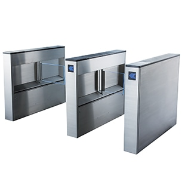
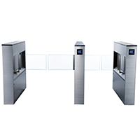
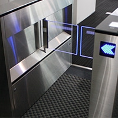
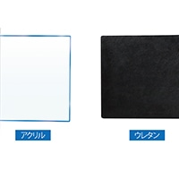

Device
Kumahira
ライトゲート／セキュリティゲート
さまざまなシーンで利用できるシンプルさ
あらゆる空間に溶け込むセキュリティゲート。コンパクトとシンプルをコンセプトに設計されたデザインは、
継ぎ目の処理にまで徹底的にこだわり、情報量を極限まで削ったフラットな意匠は様々な空間に調和します。
子供やベビーカーの通行を考慮し、安全性の高い柔らかなウレタン製フラップもご用意。オフィスビルだけでなく、図書館や美術館など様々なシーンで利用できます。

- 屋内
- 最大50人／分
- 通路幅
600mm / 900mm - フラップ高
800mm - フラップタイプ
- 安全重視
商品の特長
シンプルで空間に調和するデザイン
本体形状がフラットで、光沢のあるステンレスヘアライン仕上げの外観は、スマートで上質感にあふれ、多くの意匠に調和します。2011年グッドデザイン賞受賞製品です。

場所を取らない省スペース設計
ゲート長1,100mmというショートスタイルにより、十分な設置スペースの確保が難しい場所でもセキュリティ環境を構築します。

安全に配慮したオプション
下部補助センサー（オプション）とウレタン製フラップを選択することにより、検知性能を高めるとともに、衝突した際の衝撃を吸収し、子供でも安全に通行できます。

スペック一覧
| 本人認証端末 | 入退管理用の本人認証端末は別売品 |
|---|---|
| 通行方向 | 双方向通行可能 |
| 通行能力 | 1通路あたり通常25人/分、自動ドアモードの場合50人/分 |
| 本体寸法 | W150×H900×D1,100mm |
| フラップ高さ | アクリル製：床上700mm ウレタン製：床上697.5mm |
| 通路幅※1 | 標準通路：基本通路幅600mm、変更可能範囲600〜650mm ワイド通路：基本通路幅900mm、変更可能範囲900〜950mm |
※1 ゲート本体の設置位置を変えることにより、上記の範囲内で通路幅を設定することが可能です。ただし、通路幅を変えると閉扉時のフラップとゲート本体または、フラップ間の隙間も変わります。
※不特定多数（幼児含む）の方が通行する場合には、下部補助センサーとウレタン製のフラップの設置が必須です。
※弊社ウェブサイト、カタログに記載された製品および仕様は、製品の改良などのために、仕様・外観は予告なしに変更することがありますのでご了承ください。ご注文に際しましては、最新の製品仕様を弊社窓口までご確認くださいますようお願いいたします。